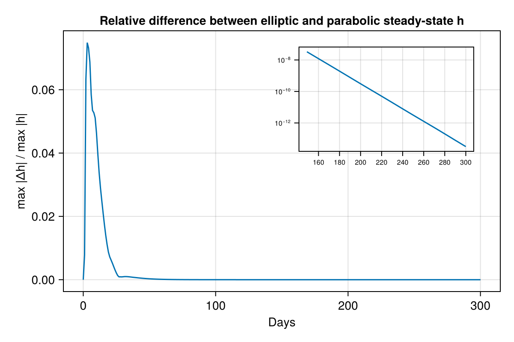

Parabolic head scheme
Every other example in this gallery uses the default EllipticHeadScheme (p.e_v == 0): each timestep, hydraulic head h is solved to full nonlinear (Picard) convergence given the current transmissivity K/gap height b – h has no memory of its own, only b carries state forward between timesteps. Setting p.e_v != 0 (a nonzero englacial storage void ratio, Sommers, Rajaram & Morlighem 2018's Eq. 13 ∂(e_v(h-zb))/∂t term) switches to ParabolicHeadScheme instead: h itself now has inertia, so it takes several timesteps to catch up to a sudden change in forcing rather than jumping there in one step. This example runs the same synthetic slab under both schemes from an identical spun-up state and tracks how far apart their h fields stay as both relax toward steady state.
using Shakti
using CairoMakieGeometry, mask, and physical setup
The same synthetic slab as the Seasonal melt input example (Table 2 geometry from Sommers, Rajaram & Morlighem 2018): outlet at x=0 (LAND, Dirichlet head = 0), zero-flux elsewhere (OTHER_BASIN). No moulin here – ieb is applied uniformly, so a single domain-mean head timeseries tells the whole story.
const NX, NY = 16, 16
const LX, LY = 4000.0, 8000.0
grid = Grid(NX, NY, LX, LY)
zb = zeros(NX, NY)
H0, H1 = 550.0, 700.0
Hx = sqrt.(H0^2 .+ (H1^2 - H0^2) .* (grid.x ./ LX))
zs = repeat(Hx, 1, NY)
mask = fill(GROUNDED, NX, NY)
mask[1, :] .= LAND
mask[end, :] .= OTHER_BASIN
mask[:, 1] .= OTHER_BASIN
mask[:, end] .= OTHER_BASIN
A_visc = fill(5e-25, NX, NY)
b = fill(0.01, NX, NY)
G = fill(0.05, NX, NY)
ub_x = fill(1e-6, NX + 1, NY)
ub_y = zeros(NX, NY + 1)
sl = RegularizedCoulombSlidingLaw(0.25)
taub_x = zeros(NX + 1, NY) # unused: RegularizedCoulombSlidingLaw recomputes taub from N/ub every Picard iteration
taub_y = zeros(NX, NY + 1)
const SECONDS_PER_YEAR = 365 * 86400.03.1536e7Baseline: spin up under the elliptic scheme
p.e_v doesn't enter set_initial_conditions! at all, so a single elliptic spin-up (matching Seasonal melt input's own baseline) gives a physically sensible common starting point for both schemes below – built with elliptic rather than parabolic since Picard's nonlinear convergence, not storage-damped transients, is what "steady" should mean for a baseline.
p_base = ModelParameters(e_v = 0.0, b_min = 1e-3, omega = 1e-4)
ieb_base = fill(1.0 / SECONDS_PER_YEAR, NX, NY) # 1 m/yr distributed background melt
state0 = State(grid)
set_initial_conditions!(state0, grid, p_base, sl, mask, A_visc, zb, zs, b, G, ub_x, ub_y, ieb_base, taub_x, taub_y)
ls_spinup = CholeskyDirectSolver(grid)
ps_spinup = PicardSolver(500, 1e-6, ls_spinup, grid; alpha = 0.1)
sim_spinup = Simulation(grid, state0, 20, floattype(3600.0), p_base, "implicit", String[], ConstantMeltInput(), sl; ps = ps_spinup)
run!(sim_spinup)Steady state: same destination, different path
e_v only sets how fast h relaxes toward the steady balance of diffusion vs. sources (Sommers et al. 2018 Eq. 13's e_v*∂h/∂t storage term vanishes once ∂h/∂t -> 0) – it doesn't change what that balance is. Starting fresh from the spun-up baseline state0 (the 1 m/yr background melt), running both schemes forward with h tracked at every step shows the two fields converging onto the same fixed point rather than just confirming they end there.
p_elliptic_ss = ModelParameters(e_v = 0.0, b_min = 1e-3, omega = 1e-4)
p_parabolic_ss = ModelParameters(e_v = 1e-3, b_min = 1e-3, omega = 1e-4)
state_elliptic_ss = deepcopy(state0)
state_parabolic_ss = deepcopy(state0)
dt_ss, tsteps_ss = 86400.0, 300 # 1 day steps, ~10 months -- long enough for both schemes to plateau
tracked_times_ss = 0:tsteps_ss
ls_elliptic_ss = CholeskyDirectSolver(grid)
ps_elliptic_ss = PicardSolver(500, 1e-6, ls_elliptic_ss, grid; alpha = 0.1)
sim_elliptic_ss = Simulation(grid, state_elliptic_ss, tsteps_ss, floattype(dt_ss), p_elliptic_ss, "implicit", ["h"], ConstantMeltInput(), sl;
ps = ps_elliptic_ss, which_observer = "Live", tracked_times = tracked_times_ss)
run!(sim_elliptic_ss)
ls_parabolic_ss = CholeskyDirectSolver(grid)
sim_parabolic_ss = Simulation(grid, state_parabolic_ss, tsteps_ss, floattype(dt_ss), p_parabolic_ss, "implicit", ["h"], ConstantMeltInput(), sl;
ls = ls_parabolic_ss, which_observer = "Live", tracked_times = tracked_times_ss)
run!(sim_parabolic_ss)Results
Relative difference (max |Δh| over the domain, scaled by max |h| that step) between the two h fields at every tracked step: it starts at 0 (identical spin-up state), grows while the parabolic scheme's storage still lags the elliptic scheme's instantaneous balance, then decays back toward 0 as both relax onto the same steady state. The inset re-plots the back half on a log axis, since on the main linear axis the tail is indistinguishable from 0 even though it's still decaying (down to floating-point noise by the end).
hist_e_ss, hist_p_ss = sim_elliptic_ss.observer.history["h"], sim_parabolic_ss.observer.history["h"]
days = collect(tracked_times_ss) .* (dt_ss / 86400)
h_diff_rel = [maximum(abs.(view(hist_e_ss, :, :, i) .- view(hist_p_ss, :, :, i))) / maximum(abs.(view(hist_e_ss, :, :, i))) for i in axes(hist_e_ss, 3)]
fig_diff = Figure(size = (600, 400))
ax = Axis(fig_diff[1, 1], title = "Relative difference between elliptic and parabolic steady-state h", xlabel = "Days", ylabel = "max |Δh| / max |h|")
lines!(ax, days, h_diff_rel)
tail = (length(days) ÷ 2):length(days)
ax_inset = Axis(fig_diff[1, 1], width = Relative(0.4), height = Relative(0.4), halign = 0.9, valign = 0.9,
yscale = log10, backgroundcolor = :white, xlabelsize = 10, ylabelsize = 10, xticklabelsize = 8, yticklabelsize = 8)
lines!(ax_inset, days[tail], h_diff_rel[tail])
translate!(ax_inset.blockscene, 0, 0, 100)
fig_diff